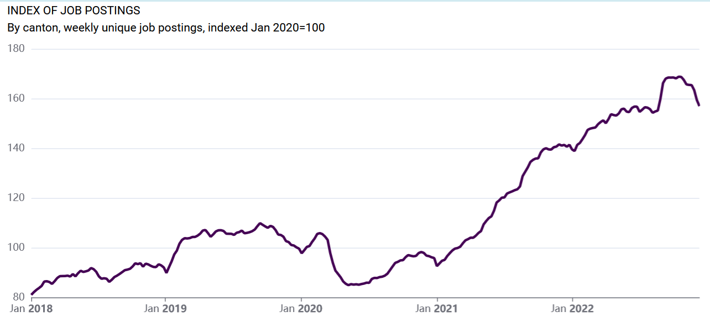

Swiss Job Tracker is a new job market index for Switzerland that is updated weekly. It tracks the development of all job postings advertised on company websites and job portals in Switzerland. On Friday of the second week of December, the weekly job market index for the overall economy stood at 157 index points. This index value means that 57% more jobs were advertised on November 11 than in January 2020. January 2020, shortly before the outbreak of the Corona pandemic, serves as the reference point for the index.
While the current situation on the Swiss job market thus remains very good for jobseekers in a longer-run perspective, the new real-time indices indicate a slight deterioration of the job market in the last few weeks. In mid-October, the index value had been above 168 points (or 68% above the pre-pandemic level). The total number of jobs advertised on online sources thus decreased by around 7% in two months. The slight decline in job postings over the course of several weekly releases of the job indices is probably a sign of the deteriorating Swiss economy. Another driver is seasonal: there is typically less demand for personnel in the tourism industry in November than in October due to the shoulder season.

The new job indices can also be broken down by canton, industry and occupation. The industry-level indices indicate that the decline in the overall index stems from a broader decline of online job postings in most industries. As you would expect if the World economy moves into a downturn, the decline in recent weeks is somewhat more pronounced in more export-oriented sectors such as manufacturing, wholesale and retail trade, transportation, and banking and insurance. The breadth of the decline indicates that we could see a broader-based normalization of the job market in the coming months. The only larger industry that, so far, shows little evidence for a decline in online vacancies is the human health and social work sector.
All job indices can be viewed and downloaded on the website www.swissjobtracker.ch. The data will henceforth be published every week. The data basis and the calculation method of the indicator are described in detail here.